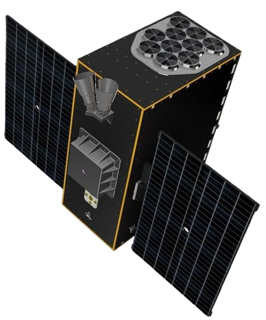

Mission
The Netherlands Educational Small-sat for Exploring Binary-Linked Astrophysics – X-ray Observer, or NEBULA-Xplorer, will be the most fun and exciting project within the scientific space industry in the Netherlands. By far. It will be a relatively short, fast paced astrophysics instrumentation project done by students for students, with great opportunities for science, technology, outreach and most of all personal development, for all people involved. The goal of NEBULA-Xplorer is two-fold. First, it gives the Dutch scientific community a fully SRON controlled small satellite for science, based on long term observations in soft X-ray of binary systems like Cygnus X-1. Second, the instrument and small satellite will both be built fully by students as a training exercise, with coaching from the educational institutions, the Dutch space industry and SRON Netherlands Institute for Space Research. The students working on NEBULA – Xplorer will be from universities, universities of applied sciences (HBO) and secondary vocational institutions (MBO).
Science case
The science case of the NEBULA-Xplorer is extremely interesting, as continuous observations of the same systems will allow us to observe how these systems evolve over time. The regular observations afforded to us by full control over NEBULA-Xplorer will allow us to probe the physical phenomena driving these changes in unprecedented detail. The soft x-ray has already been shown to exhibit interesting behaviour in time lag analysis. Many of these systems also exhibit quasi-periodic oscillations (QPOs) which evolve over time and are an active area of research and debate within the community. The timing capabilities of NEBULA-Xplorer will allow us to explore these multiple avenues of soft x-ray emission in binary objects. In particular, NEBULA-Xplorer will be the only platform which allows for observations of the fast evolution of binary systems such as the launching of relativistic jet, which currently cannot be captured due to imprecise predictions of when these events will occur.